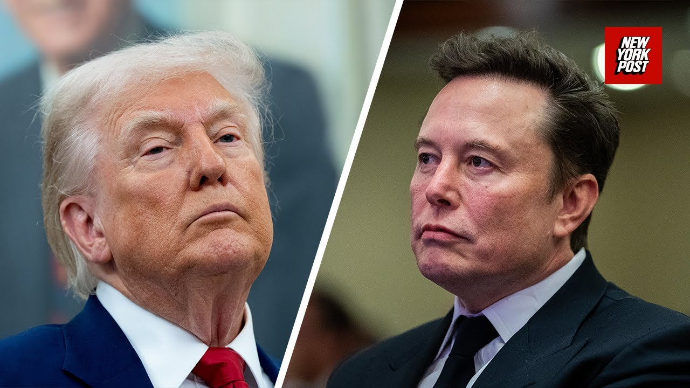

【特朗普打破沉默，回应马斯克对其“宏伟法案”的惊人批评】
Summary: Mr. President, Elon Musk criticized the bill in a TV interview, expressing disappointment it didn’t cut enough, undermining efforts. Trump responds by emphasizing the need for Republican support, criticizing Democrats for pushing tax increases, and praising the bill’s tax cuts and benefits for middle-income Americans. He also blames Democrats for immigration issues and claims they oppose the bill out of hatred.
摘要： 总统先生，埃隆·马斯克在电视采访中批评该法案，对其削减力度不足表示失望，削弱了相关努力。特朗普回应强调需要共和党支持，批评民主党推动增税，并赞扬法案的减税措施和对中产阶级的益处。他还指责民主党造成移民问题，称他们出于仇恨反对该法案。

⏱️ Estimated Reading Time: 5 min
Mr. President, Elon Musk in a television interview criticized the one be big beautiful bill saying he was disappointed it it didn't cut enough essentially that undercut the Doge efforts.
总统先生，埃隆·马斯克在电视采访中批评了这项“宏伟法案”，表示对其削减力度不足感到失望，实质上削弱了相关努力。
What's your reaction to that?
您对此有何回应？
Well, my reaction is a lot of things.
我的回应涉及很多方面。
Number one, we have to get a lot of votes.
首先，我们需要获得大量选票。
We can't be uh cutting, you know, we need we need to get a lot of support and we have a lot of support.
我们不能削减，我们需要获得大量支持，而我们确实有很多支持。
We had to get it through the House.
我们必须让法案在众议院通过。
The House was uh we have no Democrats.
众议院里我们没有民主党人的支持。
You know, if it's up to the Democrats, they'll take the 65% increase.
如果由民主党决定，他们会支持增税65%。
You know, if that doesn't get approved, this country is going to have a 65% increase in taxes and lots of other problems, big problems, almost bigger than that.
如果法案未通过，国家将面临增税65%和其他许多更严重的问题。
But we'll have a 65% increase as opposed to the largest tax cut in the history of our country.
但我们将面临增税65%，而不是我国历史上最大规模的减税。
Uh we will be negotiating that bill and uh I'm not happy about certain aspects of it, but I'm thrilled by other aspects of it.
我们将就法案进行谈判，我对某些方面不满意，但对其他方面感到兴奋。
That's the way they go.
事情就是这样。
It's very big.
法案非常宏大。
It's the big beautiful bill, but the beautiful is because of all of the things we have.
这是一项“宏伟法案”，其“宏伟”在于包含的所有内容。
Uh the biggest thing being I would say the uh uh the level of tax cutting that we're going to be doing.
最大的亮点是我们将实施的减税力度。
We're going to make people really be able to we'll have one of the we'll have the lowest tax rate we've ever had in the history of our country and tremendous amounts of benefit are going to the middle inome people of our country.
我们将让民众真正受益，实现我国历史上最低税率，中产阶级将获得巨大利益。
Low and middle inome people of of our country.
我国的中低收入人群。
So, we're gonna see what happens because the Senate, as you know, is negotiating with us and they have to then go back to the House and you know, it's got a way to go, but uh I I have to say Speaker Johnson and Thun have done an incredible job.
我们将观望进展，因为参议院正与我们谈判，之后还需回到众议院。我必须说约翰逊议长和图恩做得非常出色。
John Thun has done a fant leader Thun uh a fantastic job and they're working together with me and others and I think we have an amazing if we pull this off.
约翰·图恩作为领导者表现出色，他们与我及其他人在合作，若能成功将非常了不起。
Remember, we have zero Democrat votes because they're bad people.
记住，我们没有一张民主党选票，因为他们是坏人。
There's something wrong with them.
他们有问题。
You know, they're they'll let people pour into our country.
他们会放任人们涌入我国。
Single biggest problem is we had 21 million people pour into our country, probably higher than that.
最大的问题是已有2100万人涌入我国，实际可能更多。
And they're people that weren't supposed to be here.
这些人本不该在这里。
And many of those people are bad murderers, drug dealers, the mentally insane.
其中许多人是凶残的谋杀犯、毒贩和精神失常者。
They were closing mental institutions all over the world.
他们关闭了世界各地的精神病院。
Not South America, all over the world.
不仅是南美，而是全世界。
They're coming into our country and we're getting them out.
他们涌入我国，而我们正在驱逐他们。
We're having a hard time because some judges aren't making it very easy for us.
我们遇到困难，因为一些法官不配合。
and it's tough enough.
这已经够艰难了。
They approve that.
他们却批准这些。
They allow that to happen to our country.
他们允许这种情况发生在我国。
We don't have one Democrat vote.
我们没有一张民主党选票。
And if I were a Democrat, I'd be voting for this bill and I'd get elected to any position I want as a Democrat.
如果我是民主党人，我会支持该法案，并借此当选任何职位。
They're crazy.
他们疯了。
They're voting for a 65% tax increase.
他们支持增税65%。
And they're only doing it for hatred.
他们这样做只是出于仇恨。
They're not doing it for any reason.
他们没有任何理由。
They know it's terrible, terrible politics in my opinion.
在我看来，他们知道这是极其糟糕的政治策略。
But so we have no Democrat votes.
但我们没有民主党选票。
That means we have to get almost all Republican votes.
这意味着我们需要几乎所有共和党人的支持。
And I think we're very close to doing that.
我认为我们已非常接近。
I think it'll be very successful.
我认为这将非常成功。
Yeah, please.
是的，请讲。
Mr.
先生。